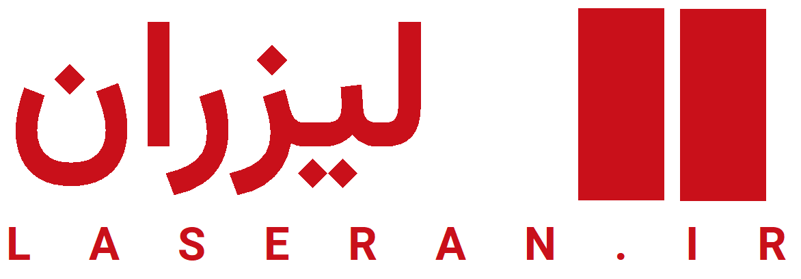
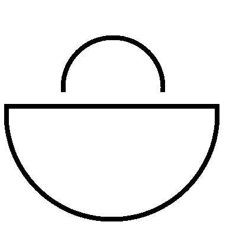
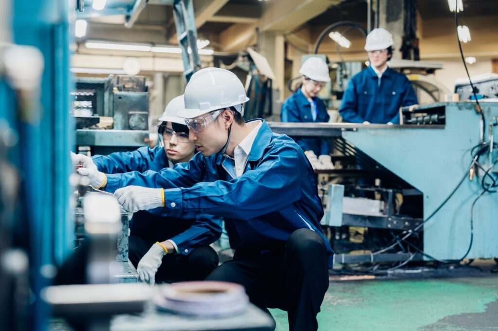
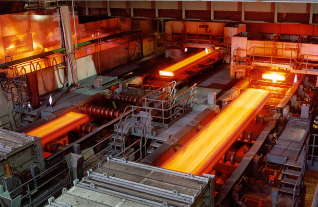
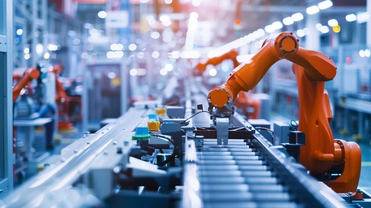
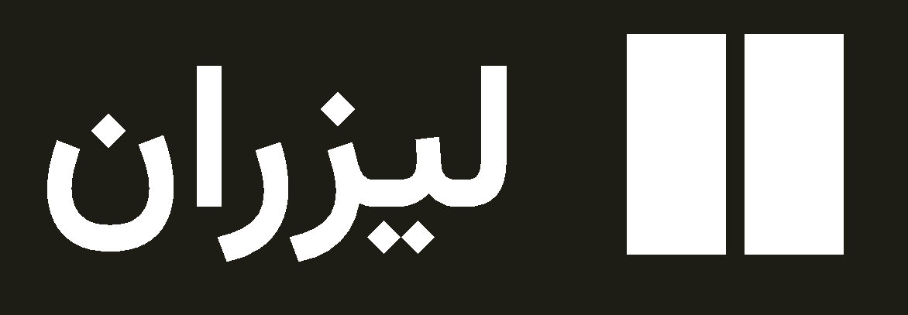

لیزران متشکل از جمعی از مهندسین فعال در صنعت ایران است. صنعت ایران حوزهها و لایههای مختلفی دارد که فصل مشترک تمامی آنها، طراحی تجهیزات است. طراحی تجهیزات عمدتا توسط مهندسین مکانیک و بسته به تخصص آن صنعت، مهندسین برق، شیمی و نفت انجام میشود که با گردهمایی این گروه، نیازهای هر صنعت شناخته شده و برای آن راه حل هایی ارائه میشود.
تیم لیزران با سابقهای طولانی در صنایع مختلف کشور، ماشینسازی را خوب یاد گرفته است. قلب تپندهی هر دستگاه و تجهیزی در صنایع بزرگ، ورق (مخصوصا ورقهای فولادی) است که پیش از تولید، فرآیندهایی همچون احیا، ذوب، نورد سرد و گرم، پیکلینگ و پوششدهی را طی میکند تا به دست ما برسد. پس از آن نیز با فرآیندهایی شامل برش پلاسما، هوابرش، لیزر یا روشهای سنتی مانند فرز بریده میشود و خمکاری و جوشکاری میشوند تا به عنوان یک محصول نو مورد استفاده قرار بگیرد.

در لیزران ما برآنیم تا فاصلهی بین ایده تا محصول را کوتاهتر کنیم و پلی در جهت تسهیل تولید محصولات صنعتی بسازیم. صنعت لیزر ایران برخوردار از تجهیزات و ماشینآلات مدرن و قدرتمندی است که تا قبل از میلاد لیزران، تنها در حوزهی فنی خودش ترقی کرده بود و نظام الکترونیک جامعی برای مدیریت سفارشهای آن وجود نداشت. با گسترش اقتصاد دیجیتال و ابزارهای نوین حال این امکان وجود دارد که شخص در دفتر خود، در کارگاه خود و حتی در خانهی خود طراحی خود را جان دهد و متولد کند.
با گستردهتر شدن و متنوعتر شدن ابزارهای تولید، دیگر نمیتوان مانند سابق برای سودآوری به الگوی سنتی تولید انبوه (Mass Production) که برآمده از عصر انقلاب صنعتی دهه 18 میلادی است، تکیه کرد. محصولات جدید، مانند لباسی که خیاط برای هر تن منحصر به فردی میسازد، اکنون شخصیسازی میشود و بصورت دقیق و در تیراژ کم برای همان کاربردی تولید میشود که بدان نیاز است.
امروزه در بالاترین نقطهی تمدن بشری از آفرینش نخستین، که پرینت سهبعدی، رباتیک ماژولار یا CNC مبتنی بر هوش مصنوعی، محصولاتی کاراتر، ارزانتر و قویتر از روز قبل را معرفی میکنند، مدیریت فناوری و کنترل پروژه نیز با همان سرعت و کیفیت حرکت میکند. امروزه منطق Just-in-Time (JIT) و Just-in-Sequence (JIS) جایگزین منطق تولید انبوه شده است و اقتصاد دیجیتال برای پیادهسازی آن با صنعت پیوند خورده است.

تیم لیزران متخصصان دانشگاههای برتر کشور را حول هم گرد آورده است تا این سرویس را به عنوان یک مدل توسعه به صنعت ایران معرفی کند. ایدهی لیزران در روزهای منتهی به جنگ سوم تحمیلی شکل گرفت و در بحبوحهی بمباران تهران در فروردین 1405 سرعت گرفت و با پذیرش در پارک فناوری پردیس بالهای خود را گشود تا مرهمی بر صنعت زخمخوردهی ایران باشد. باشد تا جوانتر و قدرتمندتر از قبل، چرخ صنعت کشور را از نو بسازد و اوج بگیرد و بر قله بنشیند.
